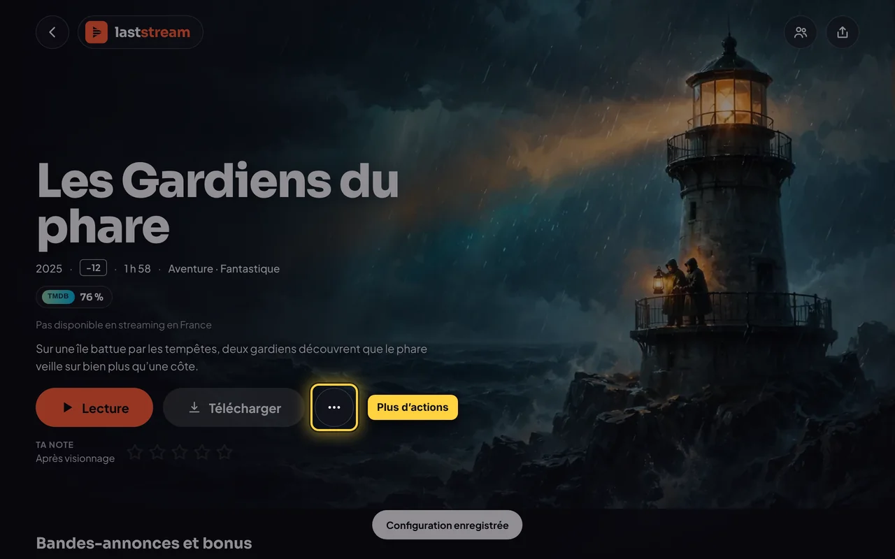
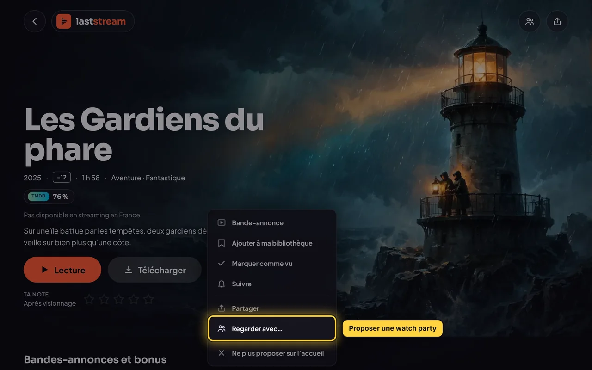
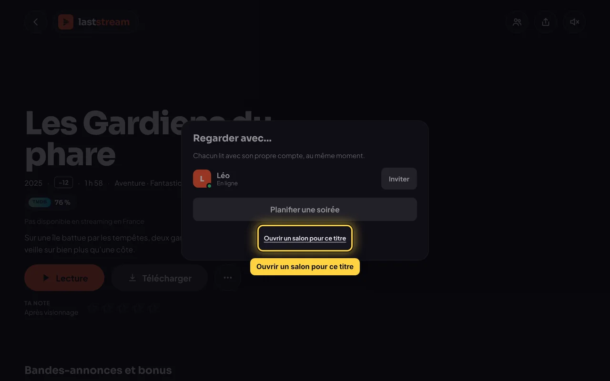
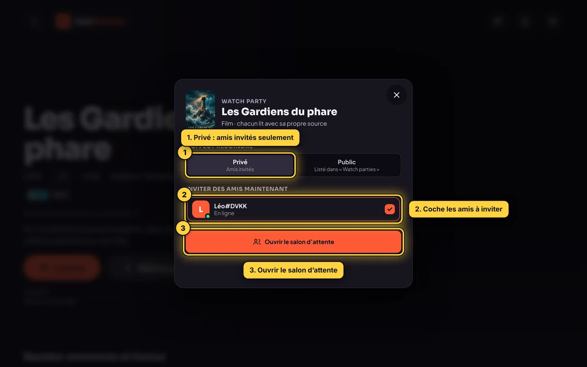
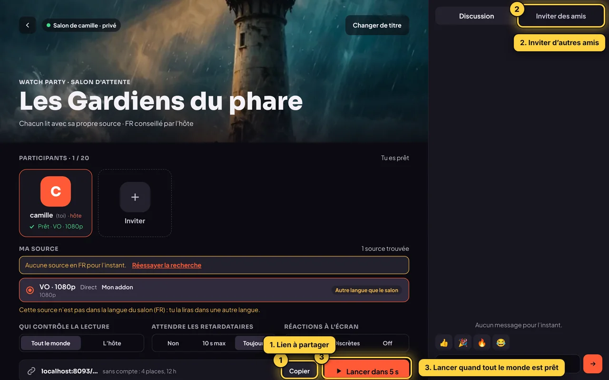

Prérequis
- Un compte connecté, sur un profil adulte.
- Au moins un ami (voir Ajouter des amis), ou le lien du salon à partager.
- Une source qui trouve le titre (voir Ajouter une source Stremio).
Étapes
Sur chaque capture, le cadre jaune montre où toucher ou cliquer ; les numéros donnent l’ordre.
-
Ouvre la fiche du film et touche le bouton « … » à côté de Lecture.

-
Choisis « Regarder avec… ».

-
Tes amis en ligne sont listés, avec « Inviter ». Pour réunir plusieurs personnes, touche « Ouvrir un salon pour ce titre ».

-
Garde « Privé » (1) pour tes seuls invités, ou choisis « Public » pour lister le salon dans « Watch parties ».
Coche les amis à inviter (2), puis « Ouvrir le salon d’attente » (3).

-
Dans le salon d’attente, chacun voit sa source se préparer. Partage le lien (1) à quelqu’un qui n’a pas de compte, ou invite d’autres amis (2).
Quand tout le monde est prêt, lance la lecture (3) : les lectures restent calées ensemble.
